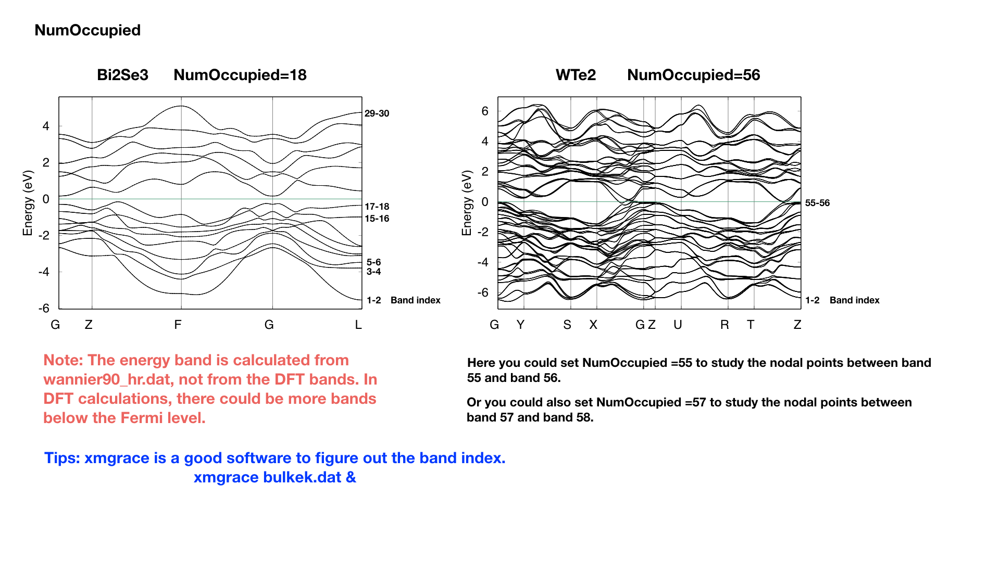
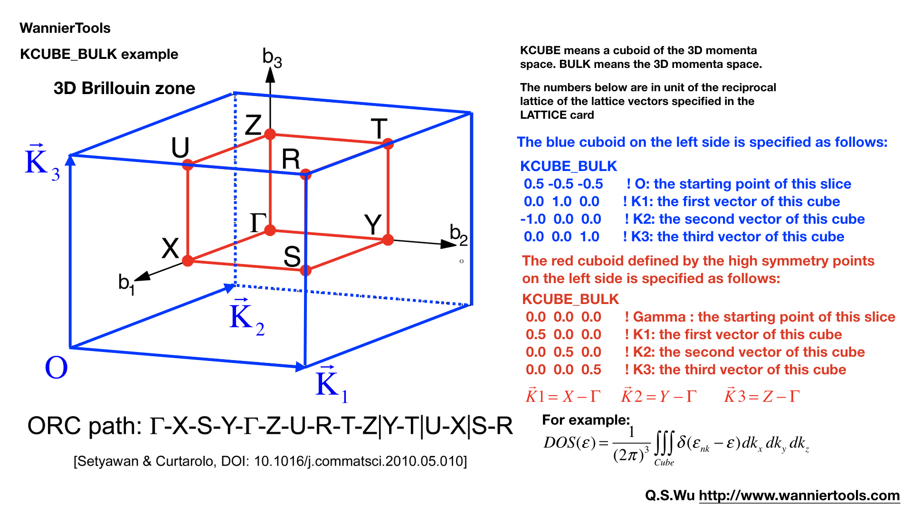

2.2. Introduction of input files#
Attention: From WannierTools 2.2, the name of input file changes from ‘input.dat’ to ‘wt.in’. The excutable binary changes from ‘wann_tools’ to ‘wt.x’
There are two input files you should prepare wt.in and wannier90_hr.dat
2.2.1. Main input file wt.in#
Before executing wann_tools, you should cp the wt.in file in the directory wannier_tools/example by your own necessary.
For version later than 2.0, we updated the format of wt.in. The input file is structured in a number of NAMELIST and INPUT_CARDS.
Here we introduce the wt.in for Bi2Se3 as an example
&TB_FILE
Hrfile = 'wannier90_hr.dat'
Package = 'VASP' ! obtained from VASP, it could be 'VASP', 'QE', 'Wien2k', 'OpenMx'
/
LATTICE
Angstrom
-2.069 -3.583614 0.000000 ! crystal lattice information
2.069 -3.583614 0.000000
0.000 2.389075 9.546667
ATOM_POSITIONS
5 ! number of atoms for projectors
Direct ! Direct or Cartisen coordinate
Bi 0.3990 0.3990 0.6970
Bi 0.6010 0.6010 0.3030
Se 0 0 0.5
Se 0.2060 0.2060 0.1180
Se 0.7940 0.7940 0.8820
PROJECTORS
3 3 3 3 3 ! number of projectors
Bi pz px py ! projectors
Bi pz px py
Se pz px py
Se pz px py
Se pz px py
SURFACE ! See doc for details
1 0 0
0 1 0
&CONTROL
BulkBand_calc = T
BulkFS_calc = T
BulkGap_cube_calc = T
BulkGap_plane_calc = T
SlabBand_calc = T
WireBand_calc = T
SlabSS_calc = T
SlabArc_calc = T
SlabQPI_calc = T
SlabSpintexture_calc = T
Wanniercenter_calc = T
BerryCurvature_calc = T
EffectiveMass_calc = T
/
&SYSTEM
NSLAB = 10 ! for thin film system
NSLAB1= 4 ! nanowire system
NSLAB2= 4 ! nanowire system
NumOccupied = 18 ! NumOccupied
SOC = 1 ! soc
E_FERMI = 4.4195 ! e-fermi
Bx= 0, By= 0, Bz= 0 ! Bx By Bz
surf_onsite= 0.0 ! surf_onsite
/
&PARAMETERS
Eta_Arc = 0.001 ! infinite small value, like brodening
E_arc = 0.0 ! energy for calculate Fermi Arc
OmegaNum = 100 ! omega number
OmegaMin = -0.6 ! energy interval
OmegaMax = 0.5 ! energy interval
Nk1 = 21 ! number k points odd number would be better
Nk2 = 21 ! number k points odd number would be better
Nk3 = 21 ! number k points odd number would be better
NP = 1 ! number of principle layers
Gap_threshold = 1.0 ! threshold for GapCube output
/
KPATH_BULK ! k point path
4 ! number of k line only for bulk band
G 0.00000 0.00000 0.0000 Z 0.00000 0.00000 0.5000
Z 0.00000 0.00000 0.5000 F 0.50000 0.50000 0.0000
F 0.50000 0.50000 0.0000 G 0.00000 0.00000 0.0000
G 0.00000 0.00000 0.0000 L 0.50000 0.00000 0.0000
KPATH_SLAB
2 ! numker of k line for 2D case
K 0.33 0.67 G 0.0 0.0 ! k path for 2D case
G 0.0 0.0 M 0.5 0.5
KPLANE_SLAB
-0.1 -0.1 ! Original point for 2D k plane
0.2 0.0 ! The first vector to define 2D k plane
0.0 0.2 ! The second vector to define 2D k plane for arc plots
KPLANE_BULK
-0.00 -0.00 0.00 ! Original point for 3D k plane
1.00 0.00 0.00 ! The first vector to define 3d k space plane
0.00 0.50 0.00 ! The second vector to define 3d k space plane
KCUBE_BULK
-0.50 -0.50 -0.50 ! Original point for 3D k plane
1.00 0.00 0.00 ! The first vector to define 3d k space plane
0.00 1.00 0.00 ! The second vector to define 3d k space plane
0.00 0.00 1.00 ! The third vector to define 3d k cube
EFFECTIVE_MASS ! optional
2 ! The i'th band to be calculated
0.01 ! k step in unit of (1/Angstrom)
0.0 0.0 0.0 ! k point where the effective mass calculated.
WANNIER_CENTRES ! copy from wannier90.wout
Cartesian
-0.000040 -1.194745 6.638646
0.000038 -1.196699 6.640059
-0.000032 -1.192363 6.640243
-0.000086 -3.583414 2.908040
0.000047 -3.581457 2.906587
-0.000033 -3.585864 2.906443
-0.000001 1.194527 4.773338
0.000003 1.194538 4.773336
-0.000037 1.194536 4.773327
0.000006 -1.194384 1.130261
-0.000018 -1.216986 1.140267
0.000007 -1.172216 1.140684
0.000011 -3.583770 8.416406
-0.000002 -3.561169 8.406398
-0.000007 -3.605960 8.405979
0.000086 -1.194737 6.638626
-0.000047 -1.196693 6.640080
0.000033 -1.192286 6.640223
0.000040 -3.583406 2.908021
-0.000038 -3.581452 2.906608
0.000032 -3.585788 2.906424
0.000001 1.194548 4.773330
-0.000003 1.194537 4.773332
0.000037 1.194539 4.773340
-0.000011 -1.194381 1.130260
0.000002 -1.216981 1.140268
0.000007 -1.172191 1.140687
-0.000006 -3.583766 8.416405
0.000018 -3.561165 8.406400
-0.000007 -3.605935 8.405982
Basic Parameters#
TB_FILE, LATTICE, ATOM_POSITIONS, PROJECTORS and SURFACE are the necessary basic parameters. They are used by almost all functionalities listed in CONTROL namelist.
NAMELISTS#
NAMELISTS are a standard input construct in Fortran90. The use of NAMELISTS is relatively flexible. All the variables in the NAMELISTS have default values. You should set them only when it is needed. Variables can be inserted in any order. Such as
&NAMELIST
needed_variable2=XX, needed_variable1=YY,
character_variable1='a suitable string'
/
There are 4 NAMELISTS included in wt.in. They are TB_FILE, SYSTEM, CONTROL, PARAMETERS.
Note
If you want to comment one line, please use ‘!’ instead of ‘#’, because our codes were written in Fortran.
TB_FILE#
Set the filename of the tight-binding Hamiltonian. At present, we use the format of wannier90_hr.dat specified in Wannier90.
&TB_FILE
Hrfile = 'wannier90_hr.dat'
Package = 'VASP' ! obtained from VASP, it could be 'VASP', 'QE', 'Wien2k', 'OpenMx'
/
The default value for Hrfile is ‘wannier90_hr.dat’. You could specify the first-principle package that used for obtaining wannier90_hr.dat. Default value for Package is ‘VASP’. We support VASP, QE, Wien2k, OpenMx, Abinit at present. Please report new software package to me if you needed.
Note
Package is very important if you use QE to generate your tight binding model. Because the orbital order in QE is different from VASP, Wien2k et al.. And it will affect the results of spin texture. If you got strange spin texture, please carefully check this tag.
SYSTEM#
In this namelists, we specify the system you need to compute.
&SYSTEM
Nslab = 10
Nslab1= 6
Nslab2= 6
NumOccupied = 18 ! NumOccupied
SOC = 1 ! soc
E_FERMI = 4.4195 ! e-fermi
Bx= 0, By= 0, Bz= 0 ! Bx By Bz
surf_onsite= 0.0 ! surf_onsite
/
NSlab : integer, Number of slabs for slab band, The default value is 10.
NSlab1, Nslab2 : integers, The thickness of nano ribbon. If you don’t want to calculate the band structure of it, then don’t set it. The default values are Nslab1= 1, Nslab2= 1.
NumOccupied : integer, Number of occupied Wannier bands. No default value.
Important: please set NumOccpuied correctly. It represents the “occpuied” wannier bands, not the total number of electrons. In the calculation of Wilson loop, the Wilson loop is the trace of NumOccupied bands. If you want to study the topology between the 8th and the 9th band, then set NumOccupied=8.
When you search Weyl points, nodal line or study the gap in some k slices, NumOccupied is also a very important. WannierTools will look for touching point or calculate the energy gap between the NumOccupied’th band and the (NumOccupied+1)’th band.
When you calculate the Fermi surface with BulkFS_calc= T, In order to save the storage, WannierTools only writes out 8(16) energy bands around NumOccupied’th band for SOC=0 (SOC=1) system into FS3D.bxsf.
If you don’t put any physical meaning into this tag, then it is very easy to understand.
{kind=link}
SOC : integer, Flag for spin-orbital coupling. If SOC=0, it means there is no SOC included in your given tight binding model. if SOC=1 or >0, it means SOC is already included in the tight binding model.
E_FERMI : real-valued, Fermi level for the given tight binding model.
Bx, By, Bz : real-valued, magnetic field value. Ignore it in this version.
surf_onsite : real-valued, Additional onsite energy on the surface, you can set this to see how surface state changes. But don’t set it if you don’t know what it is.
CONTROL#
In this name list, you can set the keywords to setup the tasks. All these tasks can be set to be true at the same time.
&CONTROL
BulkBand_calc = T ! bulk band structure calculation flag
BulkFS_calc = F
BulkGap_cube_calc = F
BulkGap_plane_calc = F
SlabBand_calc = T
WireBand_calc = F
SlabSS_calc = T
SlabArc_calc = F
SlabSpintexture_calc = T
wanniercenter_calc = F
BerryCurvature_calc = F
/
Note
New features : :red: FindNodes_calc; WeylChirality_calc; Z2_3D_calc; Chern_3D_calc
We listed those features in the table below.
Flag options |
Function |
Output |
Tested |
|---|---|---|---|
BulkBand_calc |
Band structure for bulk |
bulkek.dat, bulkek.gnu |
yes |
BulkFS_calc |
Fermi surface for bulk system |
FS3D.dat, FS3D.bxsf |
yes |
BulkGap_cube_calc |
Energy gap for a given k cube for bulk system |
GapCube.dat, GapCube.gnu |
yes |
BulkGap_plane_calc |
Energy gap for a given k plane for bulk system |
GapPlane.dat, GapPlane.gnu |
yes |
FindNodes_calc |
Find touching points between the Numoccpuied’th band and (Numoccpuied+1)’th band |
Nodes.dat, Nodes.gnu |
yes |
SlabBand_calc |
Band structure for 2D slab system |
slabek.dat,slabek.gnu |
yes |
WireBand_calc |
Band structure for 1D ribbon system |
ribbonek.dat,ribbonek.gnu |
yes |
Dos_calc |
Density of state for 3D bulk system |
dos.dat |
yes |
JDos_calc |
Joint Density of state for 3D bulk system |
jdos.dat |
yes |
SlabSS_calc |
Surface spectrum A(k,E) along a kline and energy interval for slab system |
dos.dat_l, dos.dat_r, dos.dat_bulk,surfdos_l.gnu, surfdos_r.gnu, surfdos_l_only.gnu, surfdos_r_only.gnu, surfdos_bulk.gnu |
yes |
SlabArc_calc |
Surface spectrum A(k,E0) for fixed energy E0 in 2D k-plane for slab system |
arc.dat_l, arc.dat_r, arc_l.gnu, arc_r.gnu, arc_l_only.gnu, arc_l_only.gnu, |
yes |
SlabQPI_calc |
Surface QPI for fixed energy E0 in 2D k-plane for slab system |
arc.dat_l, arc.dat_r, arc_l.gnu, arc_r.gnu, arc_l_only.gnu, arc_l_only.gnu, arc.jdat_l, arc.jdat_r, arc.jsdat_l, arc.jsdat_r, arc_l_jdos.gnu, arc_l_jsdos.gnu, arc_r_jdos.gnu, arc_r_jsdos.gnu, |
yes |
SlabSpintexture_calc |
Spin texture in 2D k-plane for slab system |
spindos_l.dat spindos_r.dat spintext_l.gnu spintext_r.gnu spintext_l.dat spintext_r.dat |
yes |
wanniercenter_calc |
Wilson loop of a given 3D k-plane for bulk system |
wcc.dat, wcc.gnu |
yes |
Z2_3D_calc |
Wilson loop in all 6 3D k-planes for bulk system Z2 number calculation |
wanniercenter3D_Z2.gnu, wanniercenter3D_Z2_{1-6}.dat |
yes |
Chern_3D_calc |
Wilson loop in all 6 3D k-planes for bulk system Chern number calculation |
wanniercenter3D_Z2.gnu, wanniercenter3D_Z2_{1-6}.dat |
yes |
WeylChirality_calc |
Weyl Chirality calculation for given k points |
find chiralities in WT.out, wanniercenter3D_Weyl.dat, wanniercenter3D_Weyl_*.gnu |
yes |
BerryPhase_calc |
Berry phase with a 3D k path for bulk system |
find Berry phase in WT.out |
Yes |
BerryCurvature_calc |
Berry Curvature in 3D k-plane for bulk system |
BerryCurvature.dat, BerryCurvature.gnu Berrycurvature-normalized.dat Berrycurvature-normalized.gnu |
yes |
AHC_calc |
Calculate anomalous Hall conductivity for bulk system |
sigma_ahe.txt in unit of (Ohm*cm)^-1 |
yes |
FindNodes_calc |
Find touch point between the N’th band to the (N+1)’th band in 3D BZ N=NumOccupied |
Nodes.dat Nodes.gnu |
yes |
PARAMETERS#
In this namelists, we listed some parameters necessary in the task you specified in namelists CONTROL.
&PARAMETERS
E_arc = 0.0 ! energy for calculate Fermi Arc
Eta_Arc = 0.001 ! infinite small value, like broadening
OmegaNum = 200 ! omega number
OmegaMin = -0.6 ! energy interval
OmegaMax = 0.5 ! energy interval
Nk1 = 50 ! number k points
Nk2 = 50 ! number k points
Nk3 = 50 ! number k points
NP = 2 ! number of principle layers
Gap_threshold = 1.0 ! threshold for GapCube output
/
E_arc : real-valued, energy for calculate Fermi arc, used if SlabArc_calc = T. The default value is 0.0.
Eta_Arc : real-valued, infinite same value for broadening used in Green’s function calculation. used if SlabArc_calc = T. Default value is 0.001.
[OmegaMin, OmegaMax] : real-valued, energy interval for surface state calculation. used if SlabSS_calc= T. No default value.
OmegaNum : integer valued, Number of slices in the energy interval [OmegaMin, OmegaMax]. used if SlabSS_calc= T. The default value is 100.
Nk1, Nk2, Nk3 : integer valued, Number of k points for different purpose. I will explain that later. Default value is Nk1=20, Nk2=20, Nk3=20.
NP : integer valued, Number of principle layers, see details related to iterative green’s function. Used if SlabSS_calc= T, SlabArc_calc=T, SlabSpintexture_calc=T. Default value is 2. You need to do a convergence test by setting Np= 1, Np=2, Np=3, and check the surface state spectrum. Basically, the value of Np depends on the spread of Wannier functions you constructed. One thing should be mentioned is that the computational time grows cubically of Np.
Gap_threshold : real valued. This value is used when you do energy gap calculation like BulkGap_cube_calc=T, BulkGap_plane_calc=T. The k points will be printed out in a file when the energy gap is smaller than Gap_threshold.
Input Card#
The second important format in wt.in is the input_card format, which is relatively fixed format. First, we need a keyword like LATTICE, which is name of this card. After this keyword, the number of lines is fixed until it is done. There are several INPUT_CARDS in the wt.in. There is no order between the INPUT_CARDS. And any comments or blank lines could be added between the INPUT_CARDS. Lets introduce them one by one.
LATTICE#
In this card, we set three lattice vectors coordinates. For the unit, you can use both Angstrom and Bohr. However, in the program, we use Angstrom. Bohr unit will be transformed to Angstrom automatically. No default values for the LATTICE CARD.
LATTICE
Angstrom
-2.069 -3.583614 0.000000 ! crystal lattice information
2.069 -3.583614 0.000000
0.000 2.389075 9.546667
ATOM_POSITIONS#
In this card, we set the atom’s position.
ATOM_POSITIONS
5 ! number of atoms for projectors
Direct ! Direct or Cartisen coordinate
Bi 0.3990 0.3990 0.6970
Bi 0.6010 0.6010 0.3030
Se 0 0 0.5
Se 0.2060 0.2060 0.1180
Se 0.7940 0.7940 0.8820
Note
1. Here the atom means that the atoms with projectors. not the whole atoms in the unit cell. 2. You can use “Direct” or “Cartesian” coordinates. “Direct” means the fractional coordinate based on the primitive lattice vector listed in LATTICE CARDS.
PROJECTORS#
In this card, we set the Wannier projectors for the tight binding.
PROJECTORS
3 3 3 3 3 ! number of projectors
Bi pz px py ! projectors
Bi pz px py
Se pz px py
Se pz px py
Se pz px py
Here we don’t take into account the spin degeneracy, only consider the orbital part. The name of orbitals should be “s”, “px”, “py”, “pz”, “dxy”, “dxz”, “dyz”, “dx2-y2”, “dz2”. I will add f orbitals latter. The order of the orbitals is very important if you want to analyze the symmetry properties. The default order in Wannier90 is “s”, “pz”, “px”, “py”, “dz2”, “dxz”, “dyz”, “dx2-y2”, “dxy”. You can find the orbital order from wannier90.wout.
Note
If you don’t care about the calculation related to symmetry like mirror chern number. The order or the name is not important. So for the f electrons, please write 7 random orbitals like px or dz2 or what else you want. This is important for f orbitals.
SURFACE#
Attention: from version v2.2.6 on, you can specify a surface with SURFACE card with only two lattice vectors.
SURFACE CARD#
This card is very important for slabs calculation. You need to read the following text carefully
SURFACE ! See doc for details
1 0 0 a11, a12, a13
0 1 0 a21 a22 a23
In this card, we specify the surface you want to investigate. Basically, you should be aware of which surface you want to investigate, and of which direction you want to study the ribbon. So we need to define the new lattice vector system like this,
Choose two lattice vectors on the surface we want to study, and choose another vector which is not on this plane.
The slab calculations are base on the surface constructed by vector \(R_1', R_2'\).
Note
a11, a12, a13 …, a23 should be integers, in unit of three lattice vectors
{kind=link}
KPATH_BULK#
This is the k path for bulk band structure calculation.
KPATH_BULK ! k point path
4 ! number of k line only for bulk band
G 0.00000 0.00000 0.0000 Z 0.00000 0.00000 0.5000
Z 0.00000 0.00000 0.5000 F 0.50000 0.50000 0.0000
F 0.50000 0.50000 0.0000 G 0.00000 0.00000 0.0000
G 0.00000 0.00000 0.0000 L 0.50000 0.00000 0.0000
These k points are in unit of the reciprocal lattice constant built by the lattice vector LATTICE CARD. The number of k points is Nk1, which is set in NAMELISTS PARAMETERS. There are no default values for this CARD. So you must set some value in the input file when choosing BulkBand_calc=T.
KPOINTS_3D#
You can calculate the properties on some kpoints you specified in point mode. e.g. the energy bands
KPOINTS_3D
4 ! number of k points
Direct ! Direct or Cartesian
0.00000 0.00000 0.0000
0.00000 0.00000 0.5000
0.50000 0.50000 0.0000
0.00000 0.00000 0.0000
The number of lines below “Direct” should be the same as the number above “Direct”. You could add comments at the end of each line. But you can’t add additional comment lines between the formatted lines.
KPATH_SLAB#
This is the k path for slab system.
KPATH_SLAB
2 ! numker of k line for 2D case
K 0.33 0.67 G 0.0 0.0 ! k path for 2D case
G 0.0 0.0 M 0.5 0.5
including the band structure calculation and the surface state calculation. It is necessary to set it when SlabBand_calc=T or SlabSS_calc=T. Number of k points along the line is Nk1.
KPLANE_SLAB#
Define a 2D k space plane for arc plots.
KPLANE_SLAB
-0.1 -0.1 ! Original point for 2D k plane
0.2 0.0 ! The first vector to define 2D k plane
0.0 0.2 ! The second vector to define 2D k plane for arc plots
The first line is the start point of the plane. The second and third line are the two vectors defining the plane. The number of k points for the 1st and 2nd vector is Nk1 and Nk2 respectively. Set this CARD when SlabArc_calc=T, SlabSpintexture_calc= T. The default values are
KPLANE_SLAB
-0.5 -0.5 ! Original point for 2D k plane
1.0 0.0 ! The first vector to define 2D k plane
0.0 1.0 ! The second vector to define 2D k plane for arc plots
{kind=link}
KPLANE_BULK#
The same set as KPLANE_SLAB CARD, but for 3D case.
KPLANE_BULK
-0.50 -0.50 0.00 ! Original point for 3D k plane
1.00 0.00 0.00 ! The first vector to define 3d k space plane
0.00 1.00 0.00 ! The second vector to define 3d k space plane
We can use these two vectors to calculate the band gap of a plane in 3D BZ, then we can check whether there are Weyl points or nodal line in that plane. Notice that these vectors is in unit of reciprocal vectors. Set this CARD when BulkGap_plane_calc=T, BerryCurvature_calc=T, wanniercenter_calc=T. Default values are
KPLANE_BULK
0.00 0.00 0.00 ! Original point for 3D k plane
1.00 0.00 0.00 ! The first vector to define 3d k space plane
0.00 0.50 0.00 ! The second vector to define 3d k space plane
{kind=link}
KCUBE_BULK#
The same set as KPLANE_BULK CARD
KCUBE_BULK
-0.50 -0.50 -0.50 ! Original point for 3D k plane
1.00 0.00 0.00 ! The first vector to define 3d k space plane
0.00 1.00 0.00 ! The second vector to define 3d k space plane
0.00 0.00 1.00 ! The third vector to define 3d k cube
We add another k vector to construct a k cube. Set this for BulkGap_cube_calc=T. The values list above are default values.
{kind=link}
EFFECTIVE_MASS#
This card is set for effective mass calculation
EFFECTIVE_MASS ! optional
2 ! The i'th band to be calculated
0.01 ! k step in unit of (1/Angstrom)
0.0 0.0 0.0 ! k point where the effective mass calculated.
SELECTED_ATOMS#
This card is useful if you want to get some energy spectrum that only projected on some specific atoms. For example, we can calculate the surface projected spin texture in the bulk system with vacuum.
The example is listed in the example/Bi2Se3-6Qlayers
SELECTED_ATOMS
2 ! number groups of selected atoms
6 12 18 24 30 ! top surface's atoms
1 7 13 19 25 ! bottom surface's atoms
WANNIER_CENTRES#
This card will be usefull for Wilson loop calculations.
WANNIER_CENTRES ! copy from wannier90.wout
Cartesian
-0.000040 -1.194745 6.638646
0.000038 -1.196699 6.640059
-0.000032 -1.192363 6.640243
-0.000086 -3.583414 2.908040
0.000047 -3.581457 2.906587
-0.000033 -3.585864 2.906443
-0.000001 1.194527 4.773338
0.000003 1.194538 4.773336
-0.000037 1.194536 4.773327
0.000006 -1.194384 1.130261
-0.000018 -1.216986 1.140267
0.000007 -1.172216 1.140684
0.000011 -3.583770 8.416406
-0.000002 -3.561169 8.406398
-0.000007 -3.605960 8.405979
0.000086 -1.194737 6.638626
-0.000047 -1.196693 6.640080
0.000033 -1.192286 6.640223
0.000040 -3.583406 2.908021
-0.000038 -3.581452 2.906608
0.000032 -3.585788 2.906424
0.000001 1.194548 4.773330
-0.000003 1.194537 4.773332
0.000037 1.194539 4.773340
-0.000011 -1.194381 1.130260
0.000002 -1.216981 1.140268
0.000007 -1.172191 1.140687
-0.000006 -3.583766 8.416405
0.000018 -3.561165 8.406400
-0.000007 -3.605935 8.405982
Those centres can be obtained from wannier90.wout by searching “Final state”. The default values for this card are atomic positions.
2.2.3. Tight-binding model wannier90_hr.dat#
There are two kinds of storage format. One is called the dense format which is defined by software Wannier90. The other one is the sparse format where only the non-zeros hopping integrals are stored. The sparse-formatted tight-binding model storage is defined by WannierTools.
Dense format storage#
This file contains the TB parameters. Usually, it can be generated by Wannier90.
Of cource, you can generate it from the Slater-Koster method or discretize k.p model onto a cubic lattice. The format should like this
written on 8May2016 at 13:57:00
30
547
2 2 1 1 1 1 1 1 1 1 2 2 2 2 2
1 1 1 2 1 1 1 2 1 1 1 1 1 1 1
1 1 1 1 1 1 1 1 1 1 1 1 1 1 4
2 2 2 2 2 2 2 4 1 1 1 1 1 1 1
1 1 1 1 1 1 1 1 1 1 1 1 1 1 1
1 1 1 1 1 1 1 1 1 1 1 1 1 2 1
1 1 1 1 1 1 2 1 1 1 1 1 1 1 1
2 2 2 2 2 1 1 1 1 1 1 1 1 1 1
1 1 1 1 1 1 1 1 1 1 1 1 1 1 1
1 1 1 1 1 1 1 1 1 1 2 1 1 1 1
1 1 1 2 1 1 1 1 1 1 1 1 1 1 1
1 1 1 1 1 1 1 1 2 2 1 1 1 1 1
1 1 1 1 1 1 1 1 1 1 1 1 1 1 1
1 1 1 1 1 1 1 1 1 1 1 2 1 1 1
1 1 1 1 2 1 1 1 1 1 1 1 1 1 1
1 1 1 1 1 1 1 1 1 1 1 1 1 1 1
1 2 1 1 1 2 1 1 1 1 1 1 1 1 1
1 1 1 1 1 1 1 1 1 1 1 1 1 1 2
1 1 1 1 1 1 1 2 1 1 1 1 1 1 1
1 1 1 1 1 1 1 1 1 1 1 1 1 1 1
1 2 1 1 1 2 1 1 1 1 1 1 1 1 1
1 1 1 1 1 1 1 1 1 1 1 1 1 1 1
1 1 2 1 1 1 1 1 1 1 2 1 1 1 1
1 1 1 1 1 1 1 1 1 1 1 1 1 1 1
1 1 1 1 1 1 1 1 1 1 1 1 2 2 1
1 1 1 1 1 1 1 1 1 1 1 1 1 1 1
1 1 1 2 1 1 1 1 1 1 1 2 1 1 1
1 1 1 1 1 1 1 1 1 1 1 1 1 1 1
1 1 1 1 1 1 1 1 1 1 1 1 1 1 1
1 1 2 2 2 2 2 1 1 1 1 1 1 1 1
2 1 1 1 1 1 1 1 2 1 1 1 1 1 1
1 1 1 1 1 1 1 1 1 1 1 1 1 1 1
1 1 1 1 1 1 1 1 1 1 1 1 1 1 4
2 2 2 2 2 2 2 4 1 1 1 1 1 1 1
1 1 1 1 1 1 1 1 1 1 1 1 1 1 2
1 1 1 2 1 1 1 2 2 2 2 2 1 1 1
1 1 1 1 1 2 2
-6 2 -3 1 1 -0.000002 0.000003
-6 2 -3 2 1 0.000002 0.000017
-6 2 -3 3 1 -0.000053 0.000002
-6 2 -3 4 1 -0.000031 0.000002
-6 2 -3 5 1 0.000001 -0.000000
-6 2 -3 6 1 -0.000003 0.000002
-6 2 -3 7 1 0.000037 -0.000001
-6 2 -3 8 1 -0.000001 -0.000003
-6 2 -3 9 1 -0.000005 -0.000003
-6 2 -3 10 1 -0.000062 -0.000001
-6 2 -3 11 1 -0.000001 0.000001
-6 2 -3 12 1 -0.000031 0.000002
-6 2 -3 13 1 0.000011 -0.000000
-6 2 -3 14 1 -0.000001 0.000001
-6 2 -3 15 1 0.000003 0.000003
-6 2 -3 16 1 0.000000 -0.000010
-6 2 -3 17 1 -0.000010 -0.000001
-6 2 -3 18 1 -0.000000 -0.000008
-6 2 -3 19 1 0.000000 0.000000
-6 2 -3 20 1 0.000012 -0.000002
......
The 1st line is a comment line with any content.
The 2nd line is the number of Wannier orbitals, in consideration of spin degeneracy. We call it NUM_WANNS
The 3rd line is the number of R lattice vectors, we call it NRPTS
This section is about the degeneracy of R points. If you generate wannier90_hr.dat by you self, please set it to 1. There are NRPTS number of 1.
This section gives the TB parameters. The first three integers are the coordinates or R vectors in unit of three lattice vectors. The 4th and 5th column are the band index (Row first). The 6th and 7th are complex entities of the Hamiltonian.
Sparse format storage#
In the sparse format, we only store the non-zero hopping integrals. One example is like that
! Tight binding model for Twisted double bilayer graphene m=17, theta=1.890099 degree, only pz orbit considered
895664 ! number of non-zero lines of hmnr
7352 ! number of orbitals
9 ! number of R points
1 1 1 1 1 1 1 1 1 ! degeneracies of each R point
0 0 0 1 1 -7.800000e-01 0
0 0 0 1 2 -2.806683e-01 0
0 0 0 1 3 -5.192147e-03 0
0 0 0 1 4 -2.806856e-01 0
0 0 0 1 5 -2.808505e-01 0
.....
The 1st line is a comment line with any content.
The 2nd line is the number of Wannier orbitals, in consideration of spin degeneracy. We call it NUM_WANNS
The 3rd line is the number of R lattice vectors, we call it NRPTS
This section is about the degeneracy of R points. If you generate wannier90_hr.dat by you self, please set it to 1. There are NRPTS number of 1.
This section gives the TB parameters. The first three integers are the coordinates or R vectors in unit of three lattice vectors. The 4th and 5th column are the band index (Row first). The 6th and 7th are complex entities of the Hamiltonian.